Get started
Because of the relative complexity in compiling and running Java files, many programmers use an Integrated Development Environment (IDE) to edit and run Java programs. This guide will walk you through the setup for Eclipse, a free IDE that can be downloaded from eclipse.org, and the latest version of Java (Java 8).
Install Java 8
Eclipse requires Java 8, which you can download from Oracle. You must first accept their license agreement, after which you can download the installer for your operating system.
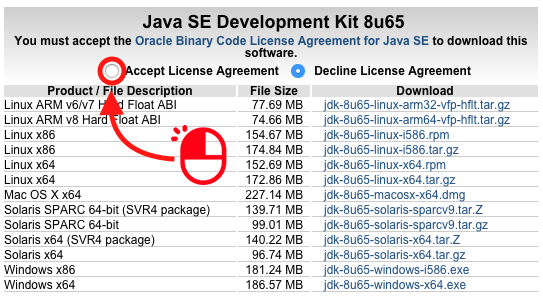
Mac OSX
The downloaded file will open a disk image, and you will have to double click the .pkg file inside the disk image to run the installer.
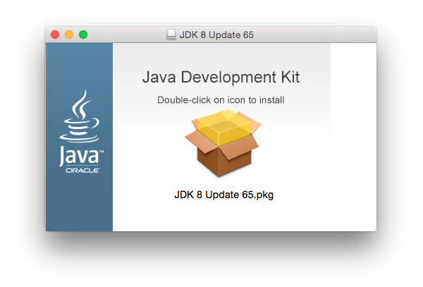
Windows
On some Windows computers, the JDK 8 installer will not properly configure your computer to work with Java. This can usually be fixed by setting your PATH variable.
Another possible issue that arises on Windows is when there are multiple versions of Java installed. Try uninstalling all versions of Java from the Control Panel, then re-install Java 8.
Install Eclipse
The Eclipse installer can be downloaded from eclipse.org/downloads. Select your operating system to download its Eclipse installer.
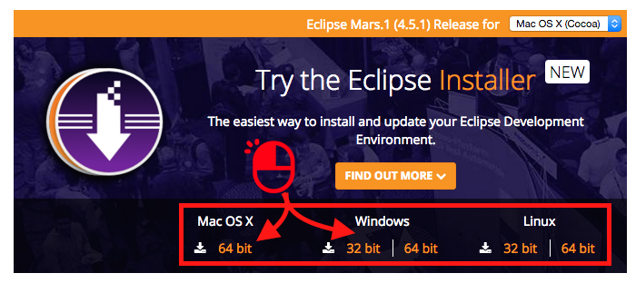
Click the orange download button to start downloading Eclipse.
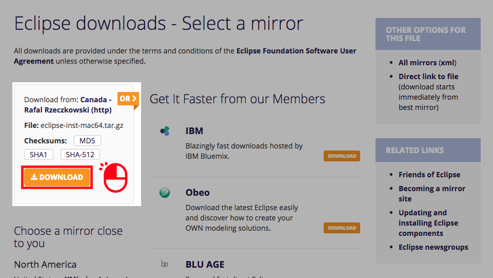
Open the downloaded Eclipse Installer and click “Eclipse IDE for Java Developers”.
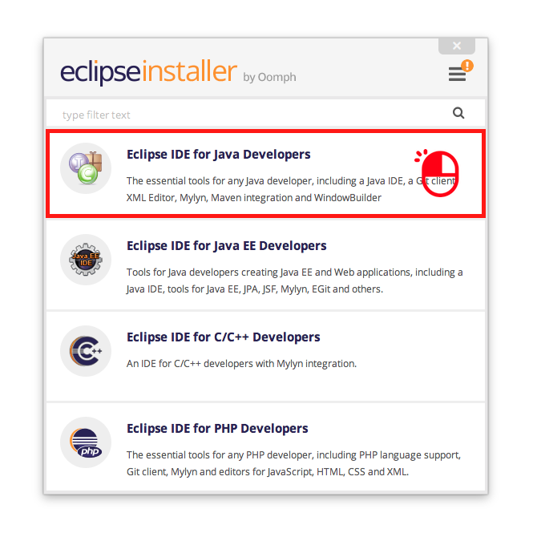
You can install Eclipse in the default eclipse folder, or select a different folder.
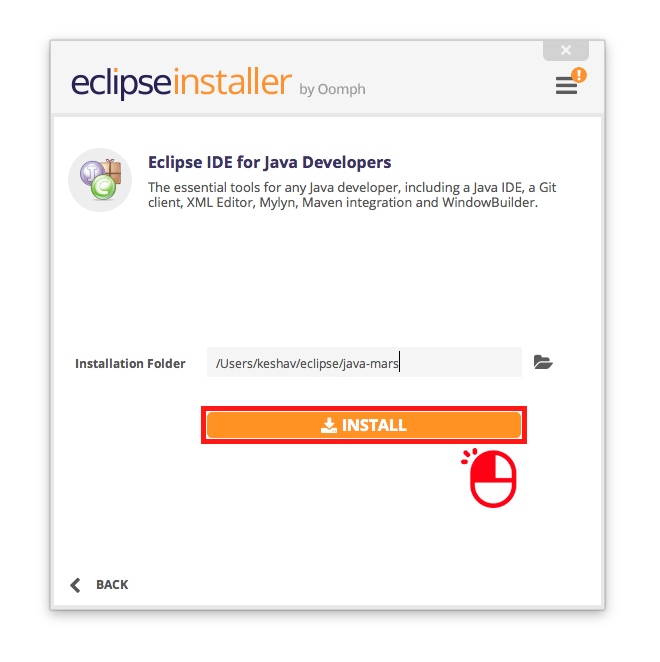
Accept the Eclipse license agreement (or click “Decide Later”) to begin the installation.
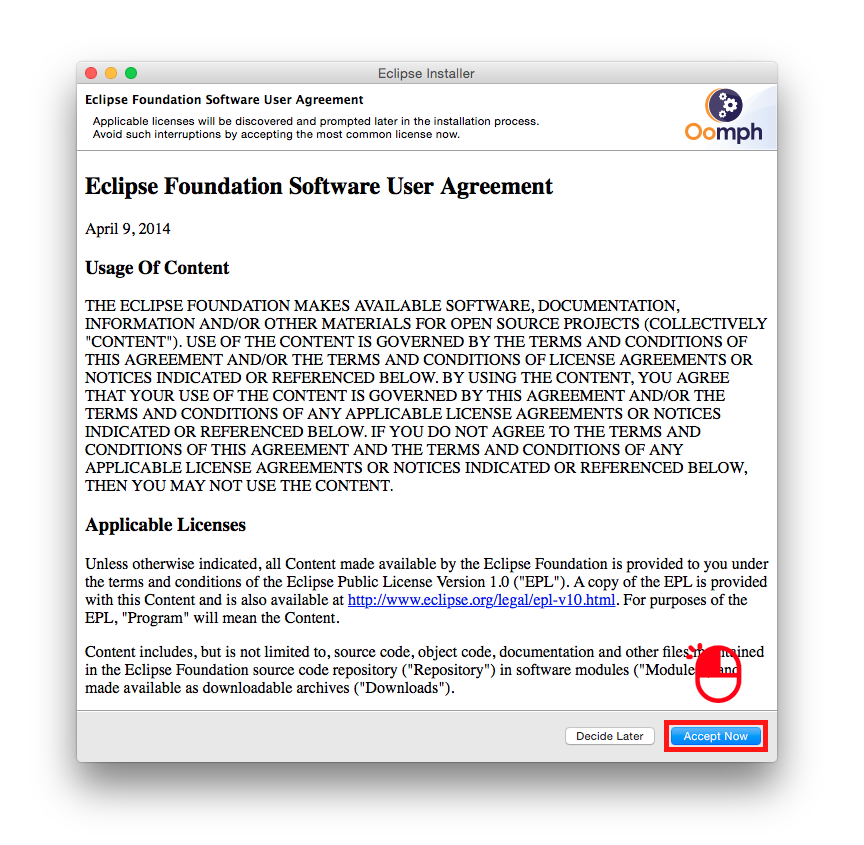
Once Eclipse has completed installation, you can click the green Launch button to open it.
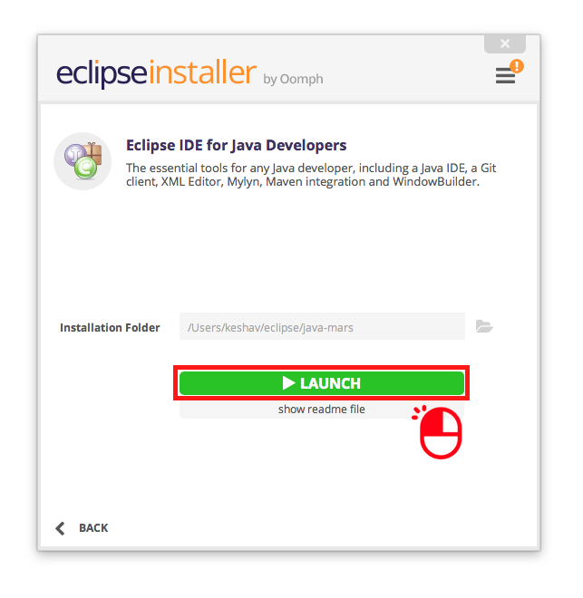
Using Eclipse
When you open Eclipse for the first time, you will need to click the “Workbench” link.
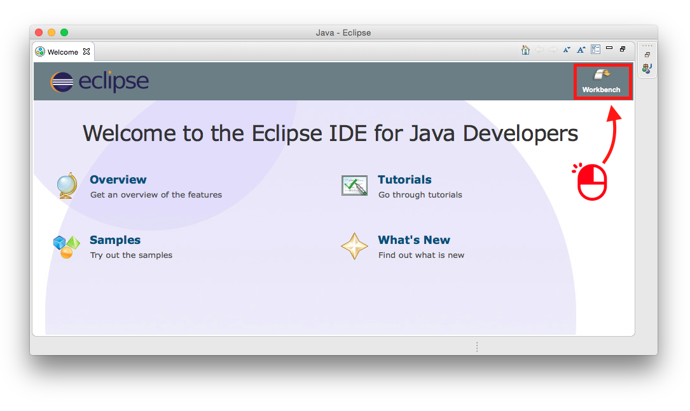
The Workbench is a feature-rich text editor that starts off with many additional panels that aren’t immediately necessary. We recommend clicking the x’s to close every panel except for the Package Explorer.
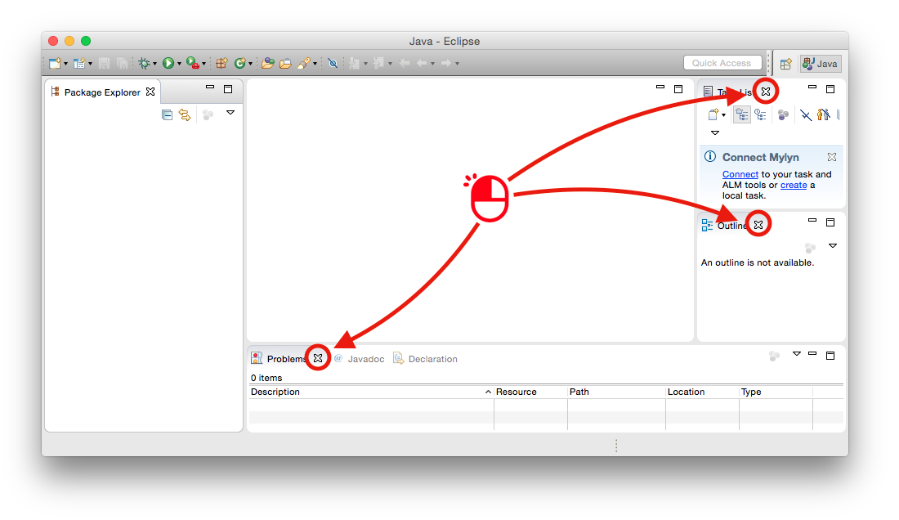
Create a project
A Java Project is just a folder on your computer that is organized by Eclipse. You can create Java Projects by right clicking on the Package Explorer, hovering over New, and selecting Java Project.
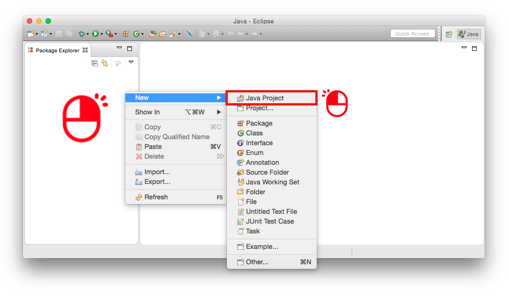
In the dialog box that pops up, enter a name for the project, then click “Finish”.
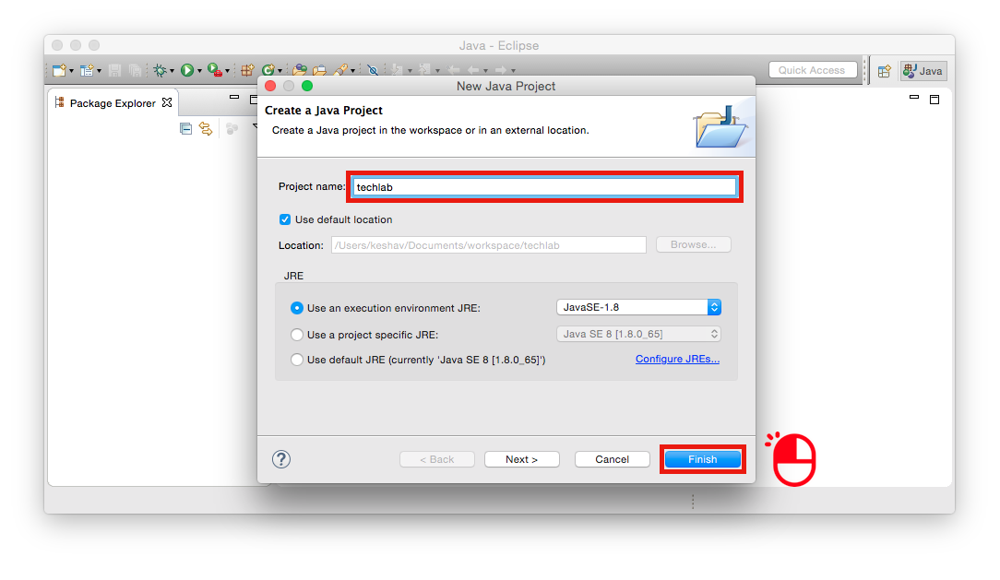
Create a file
To create a file, right click on the src folder, hover over “New”, and select “Class”.
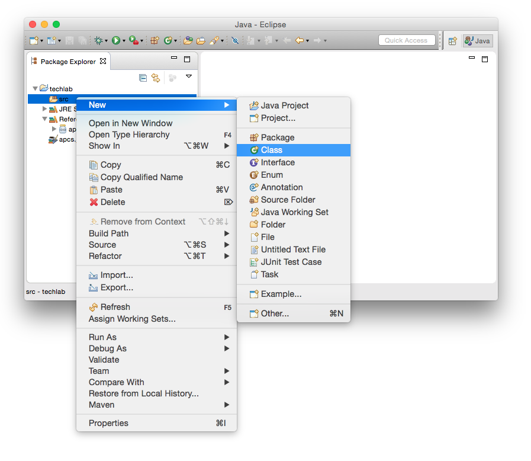
The name of a class file must begin with a letter and contain no spaces or punctuation. In Java, it is convention to capitalize the name of a class.
public class Sandbox {
public static void main(String[] args) {
}
}
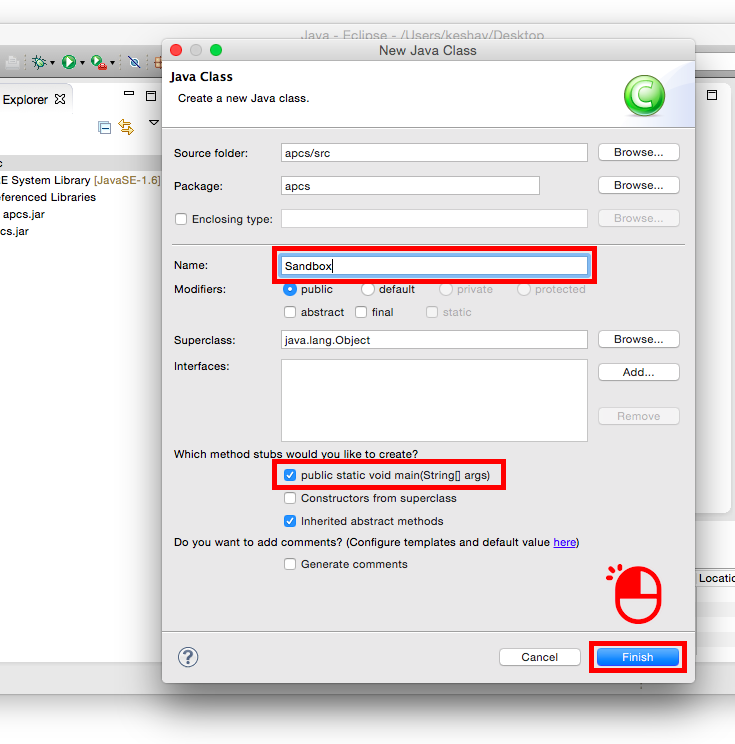
Create a package
A package is a sub-folder within the Java Project that provides an additional level of organization for your class files. You can create a project by right-clicking on the project and selecting Package from the New menu. Package names are conventionally written in lower case.
package example;
public class MyClass { ...
When a class file is added to a package, an instruction is added to the beginning of the file that marks the
Install a library
Our curriculum uses APCS graphics, a free and open-source library developed at techlab for building games and animations. We distribute the code through a Java archive file, which uses the .jar extension. In general, you will find that Java developers distribute code through .jar files, so this process applies to any library that you wish to use in the future, not just ours.
Once you have downloaded the APCS library, you will need to drag the apcs.jar file from its location on your computer to a Java Project in Eclipse. Ensure that “copy files” is selected, then click OK.
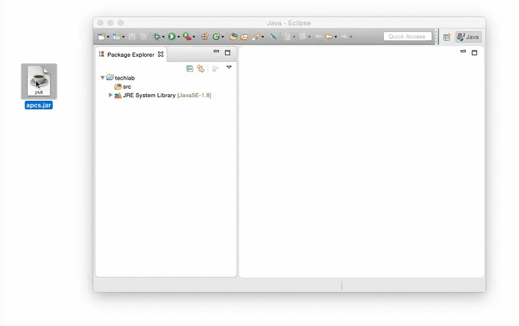
To tell Eclipse to use the APCS library, you will need to add it to the build path. Right click on apcs.jar, hover over “Build Path”, then click “Add to Build Path”.
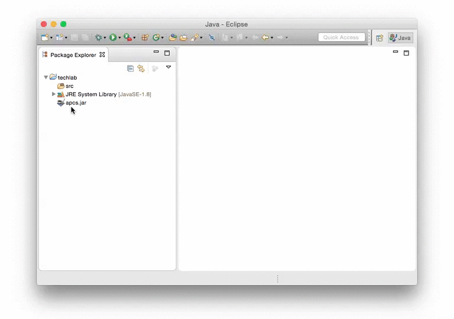